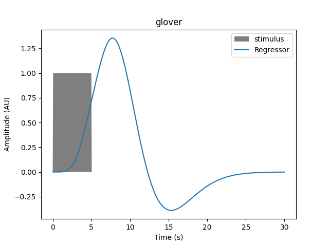
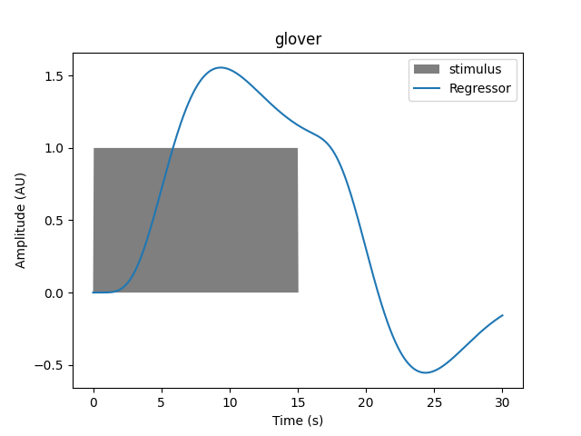

Note
Go to the end to download the full example code or to run this example in your browser via Binder.
GLM and Design Matrix Parameters#
This tutorial describes the various design choices available when analysing fNIRS data with a GLM approach.
There are subtle differences between the GLM analysis procedures available in the different fNIRS software packages (Homer, NIRS-SPM, etc). This document aims to clarify the features available for GLM analysis in the MNE-NIRS software, and demonstrate how you can modify the default analysis parameters to best suit your experiment. It also endeavours to motivate some of the design choices that were made when designing this software. Please raise a GitHub issue if there is an analysis design you would like to use but can not determine how to do with MNE-NIRS.
The MNE-NIRS GLM analysis framework is entirely based on the Nilearn package. Their excellent software forms the basis of the analysis described in this tutorial. As such, you may also wish to read their documentation to familiarise yourself with different concepts used in MNE-NIRS. Specifically this tutorial is heavily based on the following Nilearn examples, but placed within an fNIRS context.
Accordingly, in this tutorial we will access nilearn functions directly to illustrate various choices available in your analysis. However, this is just to illustrate various points. In reality (see all other tutorials), MNE-NIRS will wrap all required Nilearn functions so you don’t need to access them directly.
# sphinx_gallery_thumbnail_number = 1
# Authors: Robert Luke <mail@robertluke.net>
#
# License: BSD (3-clause)
# Import common libraries
import os
import matplotlib as mpl
# Import Plotting Library
import matplotlib.pyplot as plt
import mne
import numpy as np
# Import Nilearn
from nilearn.glm import first_level
from nilearn.plotting import plot_design_matrix
# Import MNE-NIRS processing
from mne_nirs.experimental_design import (
drift_high_pass,
longest_inter_annotation_interval,
make_first_level_design_matrix,
)
Haemodynamic Response Function#
Various Haemodynamic Response Functions (HRFs) are provided for use when analysing your data. A summary of these functions in the context of fMRI is provided in the Nilearn tutorial Nilearn: Example of hemodynamic response functions.. This example heavily borrows from that example but expands the description within an fNIRS context.
To illustrate underlying concepts we will use Nilearn functions directly,
but for analysing actual data you should use the MNE-NIRS
mne_nirs.experimental_design.make_first_level_design_matrix()
wrapper.
HRF Model Selection#
Two standard HRF models are provided. The SPM and Glover models. These differ in their response dynamics. Both are plotted on top of each other below for comparison. Note that they differ in their peak timing and undershoot.
time_length = 30
glover_timecourse = first_level.glover_hrf(1, oversampling=50, time_length=time_length)
spm_timecourse = first_level.spm_hrf(1, oversampling=50, time_length=time_length)
sample_times = np.linspace(0, time_length, num=len(glover_timecourse))
plt.plot(sample_times, glover_timecourse, label="Glover")
plt.plot(sample_times, spm_timecourse, label="SPM")
plt.xlabel("Time (s)")
plt.ylabel("Amplitude (AU)")
plt.legend()
<matplotlib.legend.Legend object at 0x7aafa18b9f40>
Regressor Computation#
These functions are not used directly in the GLM analysis. Instead they are used as the basis to compute a regressor which is utilised in the GLM fit. This is done by convolving the HRF model with a boxcar function that distills information about the experimental design. Specifically the stimulus onset times are used to indicate when a response begins, and a duration is used to specify the time over which the model should be convolved.
Modifying the duration changes the regressor timecourse. Below we demonstrate how this varies for several duration values with the Glover HRF.
# Convenient functions so we dont need to repeat code below
def generate_stim(onset, amplitude, duration, hrf_model, maxtime=30):
# Generate signal with specified duration and onset
frame_times = np.linspace(0, maxtime, 601)
exp_condition = np.array((onset, duration, amplitude)).reshape(3, 1)
stim = np.zeros_like(frame_times)
stim[(frame_times > onset) * (frame_times <= onset + duration)] = amplitude
signal, name = first_level.compute_regressor(
exp_condition, hrf_model, frame_times, con_id="main", oversampling=16
)
return frame_times, stim, signal
def plot_regressor(onset, amplitude, duration, hrf_model):
frame_times, stim, signal = generate_stim(onset, amplitude, duration, hrf_model)
plt.fill(frame_times, stim, "k", alpha=0.5, label="stimulus")
plt.plot(frame_times, signal.T[0], label="Regressor")
plt.xlabel("Time (s)")
plt.ylabel("Amplitude (AU)")
plt.legend(loc=1)
plt.title(hrf_model)
return None
# Generate an event of 1 second duration that occurs at time zero.
onset, amplitude, duration = 0.0, 1.0, 1.0
hrf_model = "glover"
plot_regressor(onset, amplitude, duration, hrf_model)

If the duration is increased we see the resulting regressor is modified, and the transformation is not a simple scaling.
For a 3 second duration:
Or for a 5 second duration:
Or for a 15 second duration:
We can plot multiple durations together to see how the resulting regressor varies as a function of this parameter.
fig, axes = plt.subplots(nrows=1, ncols=1, figsize=(7, 7))
cmap = mpl.cm.viridis
norm = mpl.colors.Normalize(vmin=0, vmax=40)
for n in [1, 3, 5, 10, 15, 20, 25, 30, 35]:
frame_times, stim, signal = generate_stim(
onset, amplitude, n, hrf_model, maxtime=50
)
axes.plot(frame_times, signal.T[0], label="Regressor", c=cmap(norm(n)))
axes.set_xlabel("Time (s)")
axes.set_ylabel("Amplitude (AU)")
plt.colorbar(mpl.cm.ScalarMappable(norm=norm, cmap=cmap), ax=axes)
<matplotlib.colorbar.Colorbar object at 0x7aafa1fc5fa0>
Inclusion in Design matrix#
As mentioned above, we don’t directly compute these regressors for
each condition. Instead the function make_first_level_design_matrix
conveniently does this for us.
As an example we will import a measurement and generate a design matrix for it. We will specify that we wish to use a Glover HRF convolved with a 3 second duration. See the MNE-NIRS fNIRS GLM tutorial for more details.
First we import the example data, crop to just the first few minutes, and give names to the annotations.
fnirs_data_folder = mne.datasets.fnirs_motor.data_path()
fnirs_raw_dir = os.path.join(fnirs_data_folder, "Participant-1")
raw_intensity = mne.io.read_raw_nirx(fnirs_raw_dir).load_data().crop(tmax=300)
# raw_intensity.resample(0.7)
raw_intensity.annotations.rename(
{"1.0": "Control", "2.0": "Tapping/Left", "3.0": "Tapping/Right"}
)
raw_intensity.annotations.delete(raw_intensity.annotations.description == "15.0")
raw_intensity.annotations.set_durations(5)
Loading /home/circleci/mne_data/MNE-fNIRS-motor-data/Participant-1
Reading 0 ... 23238 = 0.000 ... 2974.464 secs...
<Annotations | 8 segments: Control (4), Tapping/Left (2), Tapping/Right (2)>
Next we generate the design matrix and plot it. This representation of the regressor is transposed, time goes down the vertical axis and is specified in scan number (fMRI hangover) or sample. There is no colorbar for this plot, as specified in Nilearn.
We can see that when each event occurs the model value increases before returning to baseline. This is the same information as was shown in the time courses above, except displayed differently with color representing amplitude.
design_matrix = make_first_level_design_matrix(
raw_intensity,
# Ignore drift model for now, see section below
drift_model="polynomial",
drift_order=0,
# Here we specify the HRF and duration
hrf_model="glover",
stim_dur=3.0,
)
fig, ax1 = plt.subplots(figsize=(10, 6), nrows=1, ncols=1)
fig = plot_design_matrix(design_matrix, axes=ax1)
As before we can explore the effect of modifying the duration, the resulting regressor for each annotation is elongated.
design_matrix = make_first_level_design_matrix(
raw_intensity,
# Ignore drift model for now, see section below
drift_model="polynomial",
drift_order=0,
# Here we specify the HRF and duration
hrf_model="glover",
stim_dur=13.0,
)
fig, ax1 = plt.subplots(figsize=(10, 6), nrows=1, ncols=1)
fig = plot_design_matrix(design_matrix, axes=ax1)
Depending on your experimental design the resulting responses may overlap (for example an event related design). This is not an issue, the design matrix can handle overlapping responses.
design_matrix = make_first_level_design_matrix(
raw_intensity,
# Ignore drift model for now, see section below
drift_model="polynomial",
drift_order=0,
# Here we specify the HRF and duration
hrf_model="glover",
stim_dur=30.0,
)
fig, ax1 = plt.subplots(figsize=(10, 6), nrows=1, ncols=1)
fig = plot_design_matrix(design_matrix, axes=ax1)
Drift Regressors#
Aspects of the measured signal may change over time in a manner unrelated to the neural response we wish to measure. For example, the measurement room may warm up and result in a steady increase in the signal over the measurement duration. These signal changes that are unrelated to our feature of interest are termed drifts, and can be included in the design matrix and the GLM fitting as drift regressors.
In the examples above a single drift regressor was used to model a constant offset in the data. This is also termed a zero order polynomial regressor. Two types of regressors are provided for in MNE-NIRS thanks to Nilearn. Polynomial and cosine drift regressors.
Note
Remember that the GLM can fit a negative coefficient, so a decreasing drift can be modeled by the increasing drift regressor with a negative coefficient.
Polynomial Drift Regressors#
In the example above a polynomial drift regressor is included. In this case we can specify the order of the polynomials to be included. A zero order polynomial will fit a constant, a first order will fit an increasing function, and so on. As an example we demonstrate how to include up to a fifth order polynomial. You can observe that with increasing polynomial order, higher frequency components will be regressed from the signal.
design_matrix = make_first_level_design_matrix(
raw_intensity, drift_model="polynomial", drift_order=5
)
fig, ax1 = plt.subplots(figsize=(10, 6), nrows=1, ncols=1)
fig = plot_design_matrix(design_matrix, axes=ax1)
Cosine Drift Regressors#
An alternative way to specify drift regressors is via the cosine drift model. This may be more intuitive as you can specify regressors up to a certain cut off frequency. Effectively regressing out frequency components below a limit, which may be interpreted as a high pass filter. In the example below we demonstrate how to regress our signals up to 0.01 Hz. We observe that the function has included 6 drift regressors in the design matrix.
design_matrix = make_first_level_design_matrix(
raw_intensity, drift_model="cosine", high_pass=0.01
)
fig, ax1 = plt.subplots(figsize=(10, 6), nrows=1, ncols=1)
fig = plot_design_matrix(design_matrix, axes=ax1)
As described above, including additional regressor components will remove higher frequency components. So we can increase the high pass cut off and this should add more regressors.
design_matrix = make_first_level_design_matrix(
raw_intensity, drift_model="cosine", high_pass=0.03
)
fig, ax1 = plt.subplots(figsize=(10, 6), nrows=1, ncols=1)
fig = plot_design_matrix(design_matrix, axes=ax1)
Selecting Drift Regressors#
The aim of the drift regressors is to remove signal components unrelated to the expected neural response. As the expected response can be computed based on annotation timing and expected brain responses (see frequency commentary) the high pass cut off can be set on first principles.
The Nilearn documentation states that “The cutoff period (1/high_pass) should be set as the longest period between two trials of the same condition multiplied by 2. For instance, if the longest period is 32s, the high_pass frequency shall be 1/64 Hz ~ 0.016 Hz.†(reference).
To assist in selecting a high pass value a few convenience functions are included in MNE-NIRS. First we can query what the longest ISI is per annotation, but first we must be sure to remove annotations we aren’t interested in (in this experiment the trigger 15 is not of interest).
raw_original = mne.io.read_raw_nirx(fnirs_raw_dir)
raw_original.annotations.delete(raw_original.annotations.description == "15.0")
isis, names = longest_inter_annotation_interval(raw_original)
print(isis)
Loading /home/circleci/mne_data/MNE-fNIRS-motor-data/Participant-1
[np.float64(268.928), np.float64(435.0720000000001), np.float64(315.2640000000001)]
We see that the longest period between two trials is 435 seconds. Which multiplied
by two is 870 seconds. So a high pass value of 1/870 or 0.001 Hz is appropriate.
We can also use the function
mne_nirs.experimental_design.make_first_level_design_matrix()
to suggest the high pass value. Note however, that you should not blindly follow
this functions suggestion, as each experiment is different. Instead use this as
a sanity check on your own calculations.
print(drift_high_pass(raw_original))
0.0011492350691379816
For example, if all conditions were evoking the same response it may make more sense to include them as a single condition when computing the ISI. This would be achieved by renaming the triggers.
raw_original.annotations.rename({"2.0": "Tapping", "3.0": "Tapping"})
raw_original.annotations.delete(raw_original.annotations.description == "1.0")
isis, names = longest_inter_annotation_interval(raw_original)
print(isis)
print(drift_high_pass(raw_original))
[np.float64(142.9760000000001)]
0.0034970904207699167
Total running time of the script: (0 minutes 18.952 seconds)
Estimated memory usage: 500 MB